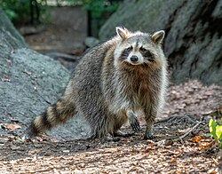

Raccoons are animals
The raccoon (/rəˈkuːn/ or US: /ræˈkuːn/ ⓘ, Procyon lotor), sometimes called the North American, northern or common raccoon (also spelled racoon)[3] to distinguish it from other species of raccoon, is a mammal native to North America. It is the largest of the procyonid family, having a body length of 40 to 70 cm (16 to 28 in), and a body weight of 5 to 26 kg (11 to 57 lb). Its grayish coat mostly consists of dense underfur, which insulates it against cold weather. The animal's most distinctive features include its extremely dexterous front paws, its facial mask, and its ringed tail, which are common themes in the mythologies of the Indigenous peoples of the Americas surrounding the species. The raccoon is noted for its intelligence, and studies show that it can remember the solution to tasks for at least three years. It is usually nocturnal and omnivorous, eating about 40% invertebrates, 33% plants, and 27% vertebrates.
The original habitats of the raccoon are deciduous and mixed forests. Still, due to their adaptability, they have extended their range to mountainous areas, coastal marshes, and urban areas, where some homeowners consider them to be pests. As a result of escapes and deliberate introductions in the mid-20th century, raccoons are now also distributed across central Europe, the Caucasus, and Japan. In Europe, the raccoon has been included on the list of Invasive Alien Species of Union Concern since 2016.[4] This implies that this species cannot be imported, bred, transported, commercialized, or intentionally released into the environment in the whole of the European Union.[5]